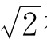
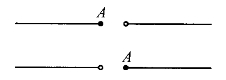
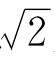
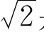
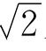
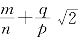

第七章 天衣无缝的数直线
数学史上最让人惊奇的事情之一，是实数系的逻辑基础竟迟至19世纪后叶才建立起来。
正整数是容易理解的，简单的计数就要用到它。3岁的孩子，也会数他手中的水果糖。
分数也是容易理解的。因为它可以归结为整数之比。
但是，无理数的本质是什么？直到18世纪，无理数对数学家们来说仍然是一个谜，但人们又不能不和无理数打交道。
随着农业生产的发展，人们为了掌握季节变化的规律，需要天文知识，要测算日月星辰的位置。这样三角学发展起来了。

被发现400多年后，人们已会计算许多角度的三角函数值，这些值绝大多数是无理数。到了1500年前后，人们不但会解二次方程式，而且开始会解一些特殊的三次方程式了。这些方程式的根，很多是无理数。
又过了不到100年，纳皮尔（1550—1617）发现了对数。我们知道，有理数的对数差不多都是无理数。
无理数的广泛使用，促使越来越多的数学家开始探讨无理数的实质。
对无理数，有的数学家坚持不承认主义。他们认为，尽管为了研究几何问题不能不用到无理数，但我们想把它数出来的时候（用小数表示出来），它们就无止境地往远跑，使我们无法准确地掌握它！既然缺乏准确性，又怎么能叫做数？所以，无理数不是数，它是隐藏在无穷迷雾后面的某种东西。
也有不少数学家认为，无理数是地地道道的数，因为无理数可以表示实实在在的几何量，可以用有理数来逼近；但他们也没有提出无理数的系统理论。
还有很多数学家，像中国、印度等东方国家的数学家，他们大胆地应用无理数，并不关心无理数的本身是什么。他们不觉得这里面有多大逻辑上的缺陷。
顺便提一下，当时，由于解二次以上的代数方程式，负数和虚数也开始在运算中使用。16世纪的欧洲数学家们，被负数、无理数、虚数弄得晕头转向，就像刚上中学的中学生，觉得这是一些难以理解的“怪物”。
随着科学的发展，负数被大家理解了，虚数也得到了合情合理的说明；但无理数之谜的谜底，直到19世纪中叶，才被真正揭开！
这是因为，由于19世纪的工业技术革命，机器被大量使用，人们在生产实践中提出了许多新问题，促使微积分迅速发展。微积分要研究变量，变量被人们理解为“连续变化”的量。什么叫连续变化呢？比如，x连续地从0变到1，这是什么意思？你可以回答说，x要取到0和1之间的一切实数。这“一切实数”又是哪些？除了有理数，算不算无理数？如果要算，无理数是什么？
这是迫切需要回答的问题。不回答这个问题，微积分的很多基本定理就证不出来。比方说：圆到底有没有面积？圆内一点和圆外一点，用一条连续曲线连起来，这曲线和圆为什么一定会相交？这些一看就对的事，偏偏证不出来！这说明关于实数的理论太不完整了。
让人惊奇的是，这个2000多年没有解开的无理数之谜，只要采用一个新的观点，便迎刃而解！
这个新观点，其实并不新，它是从欧几里得以来人们就有了的一种看法，只是大家都没把它说清楚罢了。
什么看法呢？
这就是直线的连续性。在直线上取定一个原点，一个单位长，一个正方向，直线就变成了数轴。直线是连续的，直线上面每个点可以表示一个实数，所以实数也是可连续变化的。
但是，究竟什么叫做“连续”，又不容易说清楚了。
形象地说，连续，就是没有缝隙，就是天衣无缝。如果再问什么叫天衣无缝，那该怎么回答呢？
让我们动脑又动手吧。给你一把最最锋利的刀，你用尽全身力气，在这根天衣无缝的数直线上砍一刀，把它斩成两截，会发生什么呢？
因为直线是天衣无缝的，这一刀一定砍在某个点上，或者说，砍中了一个实数。否则，岂不是有缝隙了？

图7-1
如图7-1，假定从点A的位置把直线砍断，这个点A到什么地方了呢？在左半截上，还是右半截上？
不在左边，就在右边！反正不会两边都有，也不会两边都没有；因为点不可分割，也不会消失掉！
这是想象，从想象中悟出一个道理来。所谓直线的连续性，就是这么一回事：不管把直线从什么地方砍断成两段，总有一段是带有端点的，也只有一段是带有端点的！
实数系统的连续性，也就可以依样画葫芦了：
“如果把全体实数分成甲、乙两个数集合（每个集合都不空），而且甲集里的任一个数x比乙集里的任一个数y都小，那么，要么甲集里有个最大数，要么乙集里有个最小数，二者必居其一，且仅居其一。这就叫做实数系统的连续性。”
连续性的含义，这样就清楚了。
按这个标准检查有理数系，会怎么样呢？
我们很容易发现，有理数系不满足这个标准。比如，把所有负有理数和平方不超过2的正有理数放在一起组成甲集，把所有平方超过2的正有理数组成乙集，这时，甲集里没有最大的数，乙集里也没有最小的数。如果直线上只有有理数表示的点，刚才那一刀从甲、乙两集之间砍下去，可就砍了个空。这说明这个地方有个缝隙！那请谁把它填起来呢？我们的老朋友

，正好可以填在这里。这样把有理数分成甲、乙两部分，使乙中的数都比甲中的数大，这样一个分法叫做有理数的一个“分割”。
有时候，有理数的分割之处并无缝隙。比如，把所有负的有理数组成甲集，其余的组成乙集，这时乙集就有一个最小数——0。有理数0把这个位置已占住了，不需要请无理数来了。
可见，有理数的分割有两种：带缝隙的和不带缝隙的。带缝隙的，需要添个无理数填上它；不带缝隙的，有理数早已在这里填好了。
一句话，有理数的每个分割产生一个实数。
说得更严格一些：有理数的一个分割就叫做一个实数。带缝隙的分割叫无理数，不带缝隙的分割叫有理数。
实数的这种定义，是戴德金提出来的。几乎同时，魏尔斯特拉斯和康托尔分别提出了用有理数列来定义实数的方法[1]。方法尽管不同，但建立起来的实数系统本质上是一回事。
也许你觉得，把有理数的“分割”叫实数，有点怪，有点别扭。
确实别扭，当时就有数学家对戴德金这一套不以为然。连戴德金自己也反复说，分割产生数，但分割本身并不是数。后来，大家认为，分割产生数的说法不严密。什么叫产生？数的定义还没有，怎么产生？还是说“分割”就是实数才对。尽管别扭，一开始，大家听说地球是圆的，地球绕太阳转，不也觉得别扭吗？
当时也有人提出，说无限不循环小数就是无理数，循环小数就是有理数。这样也对，也可以建立起同样性质的实数系统。
说实数是无限小数也罢，是有理数的分割也罢，是有理数的某种序列也罢，都是先承认了自然数、整数、有理数，在这个基础上才建立起实数系统。这样建立实数理论，叫做“实数的构造理论”。
后来，大数学家希尔伯特认为，这样来定义实数太麻烦了，干脆举出一些实数系统应当满足的基本条件，叫做实数公理。实数，就是符合这些公理的一些东西，岂不方便？
实数应当满足哪些公理呢？他提出了4组共18条公理，大致的意思是：
1.算术封闭性：在实数之间，加、减、乘、除可以通行无阻（除数不能是0）。四则运算的结果仍是实数。
2.运算规律：实数之间的加法和乘法，有交换律、结合律，乘法对加法的分配律。
3.实数之间可以比大小：两个实数a，b如不相等，不是a＞b，就是b＞a。这些大小关系符合一些要求，就是我们学过的不等式基本性质（若a＞b，b＞c，则a＞c；以及不等式两端可以同加一实数，同乘一正数）。
4.连续性，其中包括两点：
（1）a，b是两个正数。不管a多么小，b多么大，可以把a自己反复相加多次，使a＋a＋…＋a＞b。这叫做实数的阿基米德性质。
（2）把全体实数分成甲、乙两个非空的集合，而且乙集合里的数都比甲集合里的数大，则甲集合有最大数或乙集合有最小数，这叫做实数的完备性。
这样列出几条简单公理，在公理的基础上来展开研究，确实方便得多；近代不少教科书，讲实数就从这些公理说起，不扯老账。
这么多公理中，只有最后一条——完备性，才表现出实数系统的独特风格。不信你一条条对照，有理数系统满足其他每一条，就是不满足这一条！
在代数理论中，把满足1，2的数系，叫数域：再满足了3，就叫有序域；再满足了4之（1），叫阿基米德域；都满足了，就是完备的阿基米德域。完备的阿基米德域只有实数系统，真是独此一家，别无分店！
建立了实数的理论，许多本来说不清的事都可以说清楚了。这里举几个例子：
（1）

是什么，终于可以说清楚了。它可以用有理数的带缝隙的分割来刻画，可以用递增有界的有理数列来刻画，也可以用无限小数来刻画，也可以从实数公理出发证明方程式x2＝2有唯一正根
来说明。总之，它是一个完全有根有据的实数了！（2）长期以来，大家用圆的内接正多边形面积（或外切正多边形面积）来逼近圆面积。大家相信，当正多边形的边数无限增大时，就得到了圆面积。根据是什么呢？为什么这个“极限”一定存在呢？根据就是“递增有界数列必有极限”。可这条定理老是证不出来。原因在于，我们认为这个极限是个实数，而实数是什么却不知道！把实数说清楚了，这个定理很快就证出来了。
（3）我们认为方程式x5＋2x＋1＝0在－1到1之间一定有实根。为什么呢？因为－1代进去，等式右边得－2＜0，x＝1代进去得4＞0，让x一点点连续变化，x5＋2x＋1也只能一点点连续变化。它从－2变到4，中间一定经过0。像函数f（x）＝x5＋2x＋1的这种性质，叫做“连续函数的中间值定理”。数学家们长期以来证不出这个定理。有了严密的实数理论之后，很快就把这个问题解决了。
实数理论的建立，当时有的数学家反对，但多数是欢迎的。它把很多糊涂的东西说清楚了。
可是，这样一来，本来以为已经清楚了的东西，像自然数、有理数，对比之下，大家发现并没有弄得＋分清楚，反而显得糊涂了。问题发现了，就好办了，戴德金等人的实数理论发表不久，自然数、有理数的严密理论也出现了。数系的大厦是从上到下完工的，这是一个＋分有趣的现象！
练习题七
1.每个实数都用一个无穷小数表示。an是递增有界的实数列：a1≤a2≤a3≤…≤an≤an＋1≤A。求证：在一切大于等于所有an的数中，必有一个最小的。
2.一切形如

的数，能不能组成数域？是不是阿基米德域？ （m，n，q，p是整数，np≠0）3.平面上有一个凸多边形和一条直线l，是否一定有一条和l平行的直线，把这个凸多边形分成面积相等的两块？
4.桌子上有两块蛋糕，能不能一刀把它们同时切成相等的两块？（刀够长，又是平直的）
【注释】
[1]魏尔斯特拉斯用递增有界的有理数列来定义实数。康托尔用有理数的“基本序列”来定义实数，说a1，a2，…，an是基本序列，如果对任给的ε＞0，可以找到n0当n、m＞n0时，｜an－am｜＜ε。